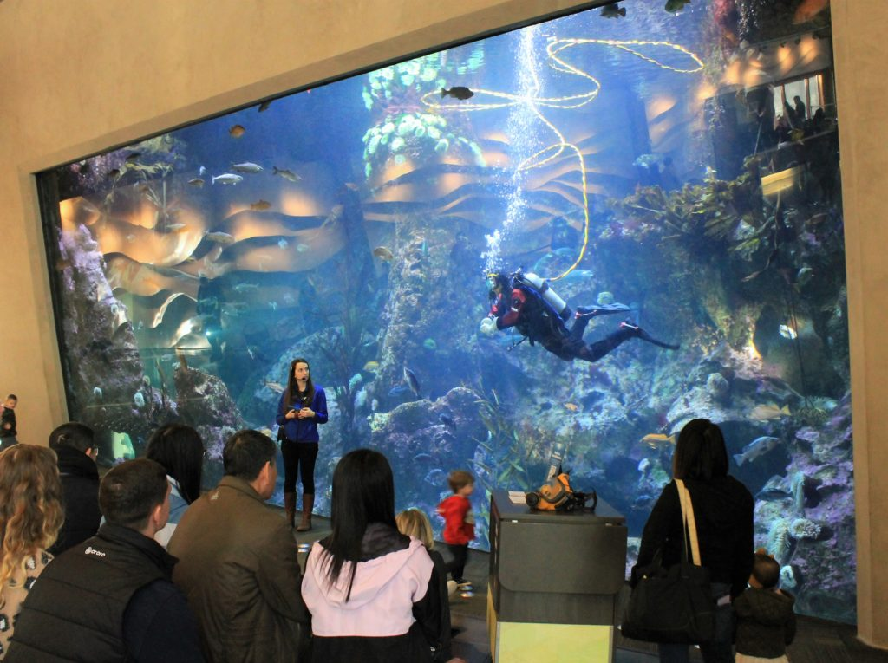

Nexus Aquarium is small. It consists of a series of tanks arranged in a looped walkway illustrating different types of marine habitats, with a particular emphasis on examples from the wide variety of national marine sanctuaries that are found within U.S. territorial waters.It’ll take you no more than 30-45 minutes or so to walk around, so it’s perfect for a quick escape from the cold or heat or a fun lunch break. There are a lot of fish (including piranhas, snakehead, lion fish, puffer fish, and angel fish), an octopus or two, turtles, moray and electric eels, crays, stingrays, jellyfish, poisonous frogs, snakes, corals, and even sharks, albeit very small ones. In 2011 through early 2012, there’s even a very rare albino alligator in residence. And there’s not a penguin or seal in sight.

Marine life, sea life, or ocean life is the plants, animals and other organisms that live in the salt water of seas or oceans, or the brackish water of coastal estuaries.
Most life forms evolved initially in marine habitats. By volume, oceans provide about 90% of the living space on the planet.The earliest vertebrates appeared in the form of fish.

More than 200,000 marine species have been documented, and perhaps two million marine species are yet to be documented.Marine life in part shape and protect shorelines
Our ocean, coasts, and estuaries are home to diverse living things. These organisms take many forms, from the tiniest single-celled plankton to the largest animal on Earth.
crocodile, (order Crocodylia, or Crocodilia), any of 23 species of generally large, ponderous, amphibious animals of lizard-like appearance and carnivorous habit belonging to the reptile.
Crocodiles have powerful jaws with many conical teeth and short legs with clawed webbed toes. They share a unique body form that allows the eyes, ears, and nostrils to be above the water surface.
Crocodiles thermoregulate by alternately sunning themselves and retiring to shaded areas or cooler water.The families and genera of the order Crocodylia are differentiated primarily by their skulls .

Crocodiles are a living link with the dinosaur-like reptiles of prehistoric times and are the living relatives of the birds.In the wild, crocodiles clamp down on prey with their massive jaws, then swallow the prey whole.
Fish are an important resource for the humans in the worldwide, especially as food. Commercial and subsistence fishers hunt fish in wild fisheries or in the farm .Extant agnathans are the lampreys.
The term fish is applied to a variety of vertebrates of several evolutionary lines. It describes a life-form rather than a taxonomic group. As members of the phylum Chordata, fish share certain features.
Living fishes represent some five classes, which are as distinct from one another as are the four classes of familiar air-breathing animals—amphibians, reptiles, birds, and mammals.
There are many different kinds of fish. They live in fresh water in lakes and rivers, and in salt water in the oceans.The characteristics of fish are typically shared by tetrapods, including having vertebrae.
Octopuses are sea animals famous for their rounded bodies, bulging eyes, and eight long arms. They live in all the world’s oceans but are especially abundant in warm.
An octopus (pl: octopuses,octopi, or octopodes, see below for variants) is a soft-bodied, eight-limbed mollusc of the order Octopoda (/ɒkˈtɒpədə/, ok-TOP-ə-də[3]).

Octopuses inhabit various regions of the ocean, including coral reefs, pelagic waters, and the seabed; some live in the intertidal zone and others at abyssal depths.
Octopuses have a closed circulatory system, in which the blood remains inside blood vessels. Octopuses have three hearts; a systemic or main heart that circulates the blood.